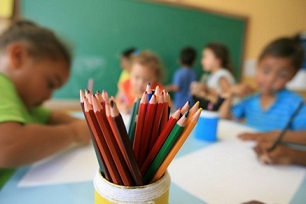

<ion-view title="Índices da cidade" id="pgEducacao" style="background-color:#D2EAD0;">
  <ion-content padding="true" class="manual-ios-statusbar-padding" scroll="true" >
    
    <div class="spacer" style="width: 300px; height: 2px;"></div>
    <div class="list card">

    <div class="item item-avatar">
        
        <h2>Educação</h2>
        <p>Um direito de todo cidadão</p>
    </div>

    <div class="item item-body">
        
            <p>
                A Educação é um direito fundamental que ajuda não só no desenvolvimento de um país, mas também de cada indivíduo. Sua importância vai além do aumento da renda individual ou das chances de se obter um emprego. "Perguntar a importância da Educação é como perguntar qual a importância do ar para nós. É pela Educação que aprendemos a nos preparar para vida", disse a socióloga e pesquisadora da Fundação Carlos Chagas (Sandra Unbehaum)<br><br>
                Avalie se a sua região possui escolas suficientes<br>
                Se há vagas suficientes nas creches e escolas<br>
                Se a qualidade das escolas é satisfatória<br>
                Se as aulas estão acontecendo normalmente<br><br>
                Contribua para que todo cidadão possa ter uma visão geral dos problemas nos serviços públicos na cidade<br> 
            </p>
            <p>
                <a href="#" class="subdued">0 Comments</a>
            </p>
    </div>
    </div>
    <a id="pgIndiceEdu-button1" class="button button-assertive  button-block ion-thumbsdown" ng-click="inserirIndice('Educação')"> Indicar problemas</a>
      <a>{{retorno}}</a>
  </ion-content>
</ion-view>
    